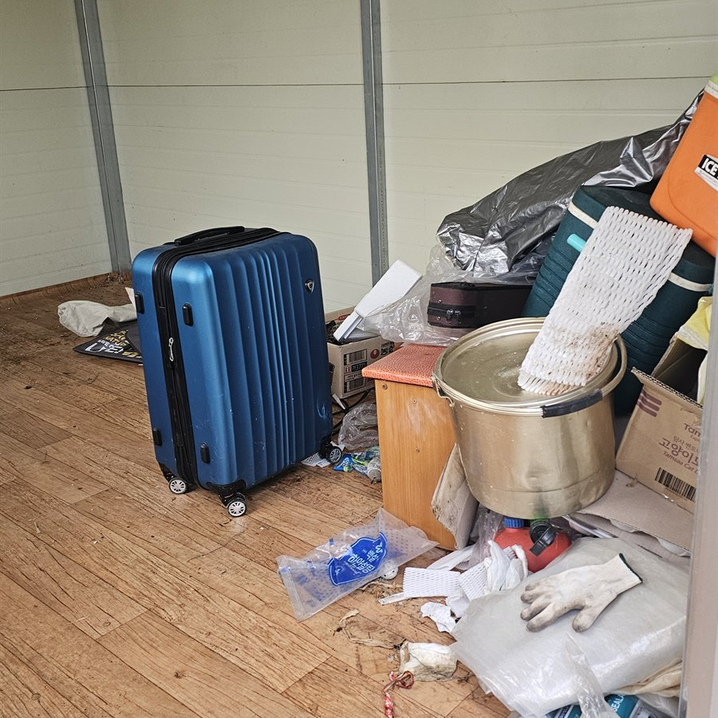
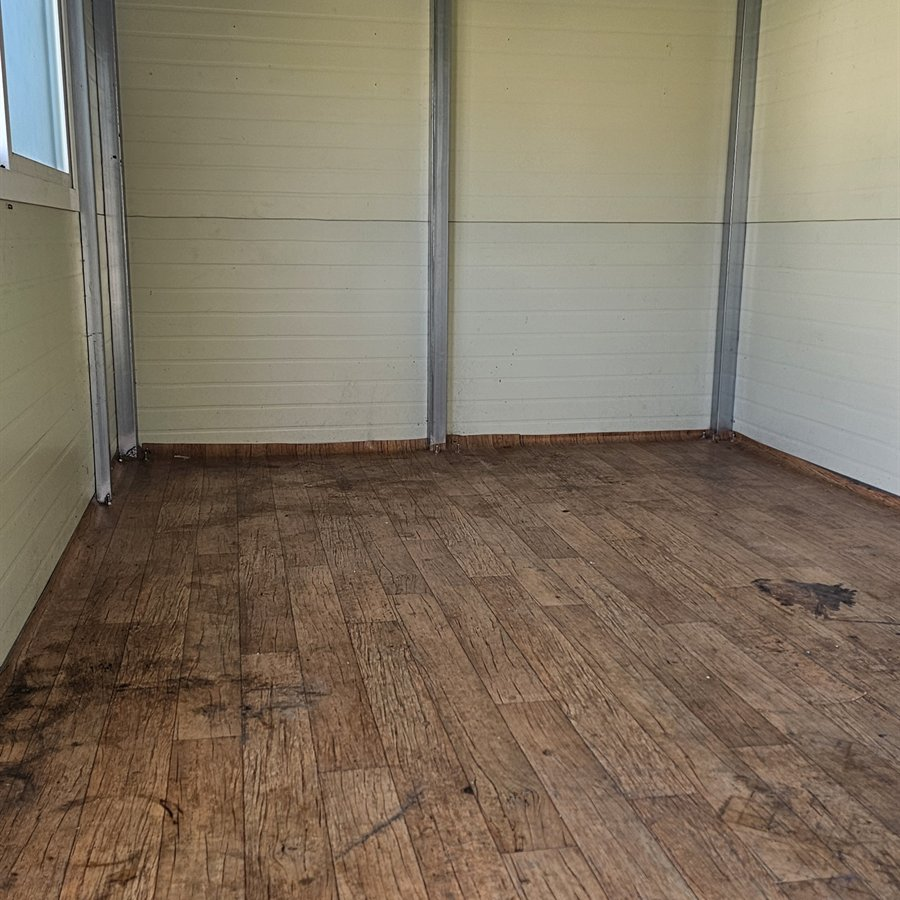
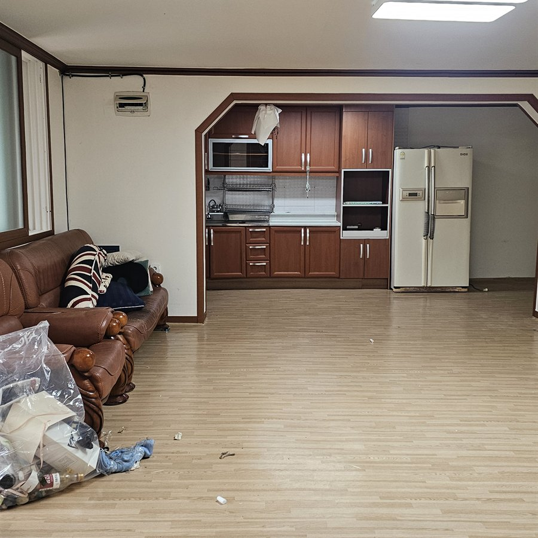
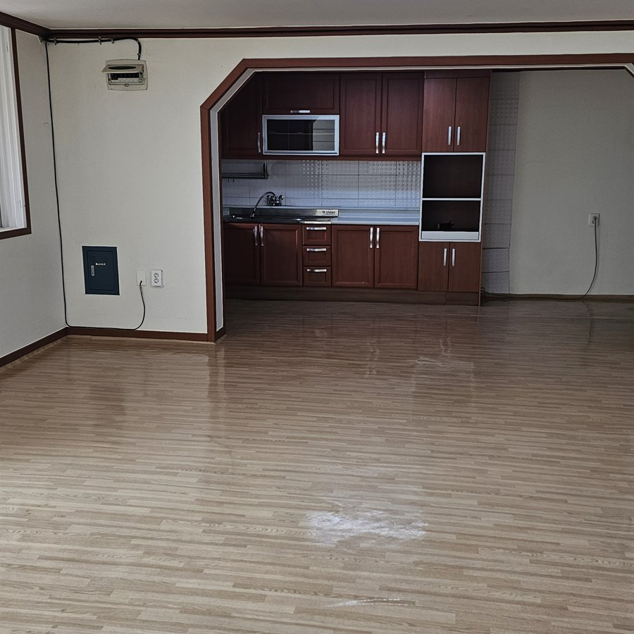
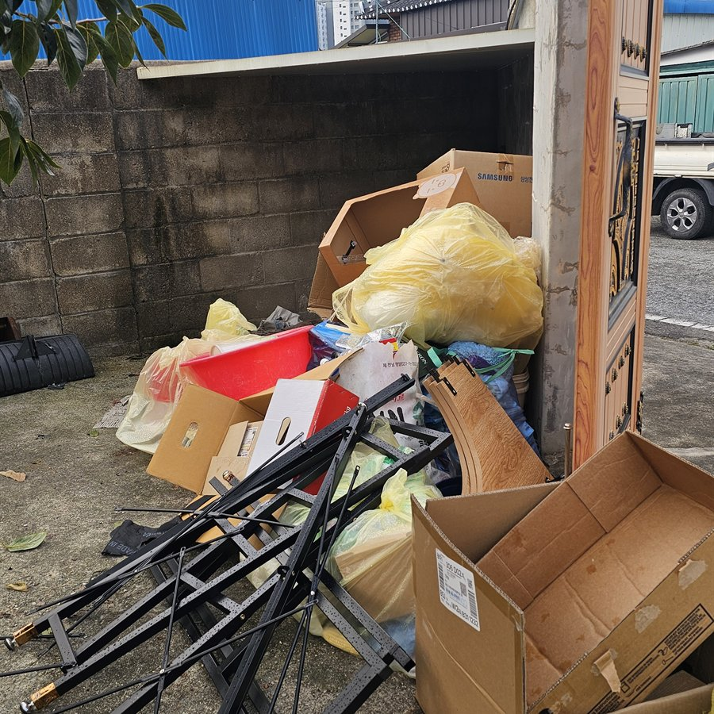
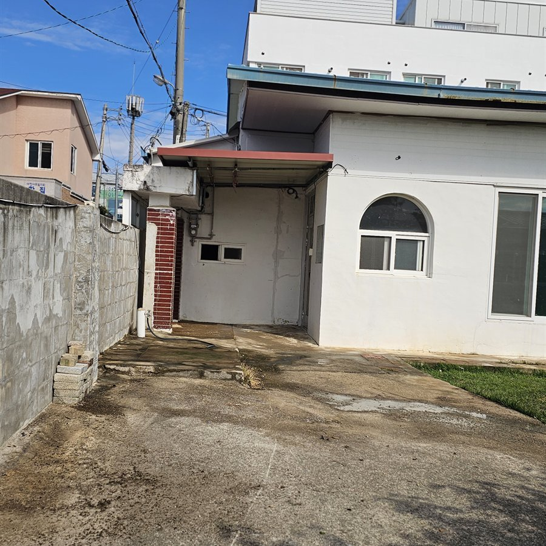

유품·소지품 분류
보관할 물건, 확인이 필요한 서류와 사진, 처분 물품을 구분합니다.
멀리 있어도 안심할 수 있는 정리
전남광주특별시의 아파트·원룸·투룸·주택·시골집에서 유품과 생활물품을 분류하고 가구·가전 반출과 빈집정리를 진행합니다. 중요한 유품과 가치 있는 소장품은 버리기 전에 따로 확인합니다.
지역 명칭 안내 · 2026년 7월 1일부터 공식 행정명은 전남광주특별시, 약칭은 광주특별시입니다. 아직 익숙한 광주·광주광역시·전남으로 찾는 분들도 같은 서비스 지역으로 안내합니다.
서비스 범위
집의 크기와 짐의 종류를 확인한 뒤 필요한 작업만 투명하게 안내합니다.
보관할 물건, 확인이 필요한 서류와 사진, 처분 물품을 구분합니다.
대형 가구와 가전을 현장 동선에 맞춰 안전하게 분리·반출합니다.
혼합된 짐을 분류하고 작업 범위에 포함된 잔여물을 수거합니다.
도자기·고가구·고서 등은 버리기 전에 매입 가능 여부를 확인합니다.
공간별 유품정리
같은 짐의 양이라도 출입 동선과 주차, 엘리베이터 여부에 따라 필요한 인원과 차량이 달라집니다.
관리사무소 일정, 엘리베이터 사용과 차량 진입 시간을 확인해 공용 공간에 불편이 적도록 반출 순서를 정합니다.
좁은 계단과 복도, 주차 여건을 먼저 확인하고 가전·침구·생활용품을 종류별로 나눠 반출합니다.
방과 창고, 마당에 흩어진 물품을 공간별로 확인하고 보관품과 정리 대상이 섞이지 않도록 분류합니다.
오래 비워 둔 집의 적치물과 대형 가구를 확인하고, 마당·창고까지 포함할지 상담 단계에서 범위를 나눕니다.
풍향동 매장 인근을 포함한 북구 현장 방문 상담
주택가와 공동주택의 출입 동선을 확인한 정리 상담
아파트·원룸·주택의 물품 분류와 반출 범위 상담
현장 위치와 차량 접근 여건을 확인한 방문 견적
나주·화순·담양 등 구 전라남도 지역과 전북은 거리와 작업 규모를 확인해 출장 가능 여부를 안내합니다.
실제 작업 사례


생활용품과 잔여 폐기물을 분류해 이동 가능한 공간으로 정리했습니다.


대형 가구와 가전을 반출하고 잔여물과 바닥을 마무리했습니다.


박스와 철제 구조물, 혼합 폐기물을 종류별로 수거했습니다.
진행 절차
주소, 면적, 짐의 양과 현장 사진을 확인합니다.
작업 인원과 차량, 처리 범위를 사전에 안내합니다.
보관품을 확인하고 나머지 물품을 순서대로 반출합니다.
잔여물을 정리하고 필요하면 사진으로 결과를 공유합니다.
견적 기준
정확한 견적은 사진 또는 방문 확인 후 안내합니다. 작업 중 임의로 범위를 늘리지 않고 추가 작업이 필요하면 먼저 설명하고 협의합니다.
FAQ
출입 방법과 보관 물품을 사전에 협의하고, 진행 상황과 결과 사진을 공유하는 방식으로 상담할 수 있습니다.
주소, 대략적인 면적, 층수, 엘리베이터 여부와 각 방의 전체 사진을 준비하면 빠릅니다.
아파트·원룸·투룸·단독주택·시골집을 상담합니다. 층수와 엘리베이터, 주차 및 반출 동선에 따라 필요한 인원과 차량이 달라질 수 있습니다.
사진, 문서, 귀중품 등 반드시 확인할 항목을 먼저 전달받고 작업 중 발견되는 물품은 따로 분류합니다.
가치가 있을 가능성이 있는 물건은 폐기 전 확인하며, 협의가 된 품목은 매입 금액을 정리 비용과 별도로 안내합니다.
현장 규모와 짐의 양, 반출 동선에 따라 달라집니다. 방문 견적 시 예상 인원과 시간을 함께 안내합니다.
기본 잔여물 정리와 별도로 세척 또는 특수청소가 필요한 경우 현장 상태에 맞춰 범위를 구분해 견적드립니다.
전남광주특별시의 북구·동구·서구·남구·광산구와 구 전라남도 및 전북특별자치도 호남 지역을 중심으로 출장하며, 그 외 지역은 작업 규모에 따라 상담합니다.
현장 전체와 출입 동선을 찍어 보내주시면 필요한 작업 범위를 먼저 확인합니다.
상담 및 방문 견적 비용은 무료입니다.